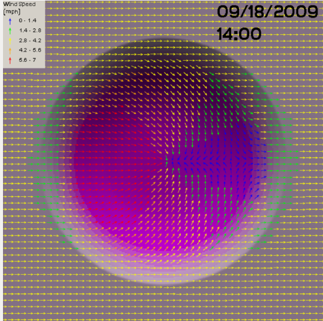
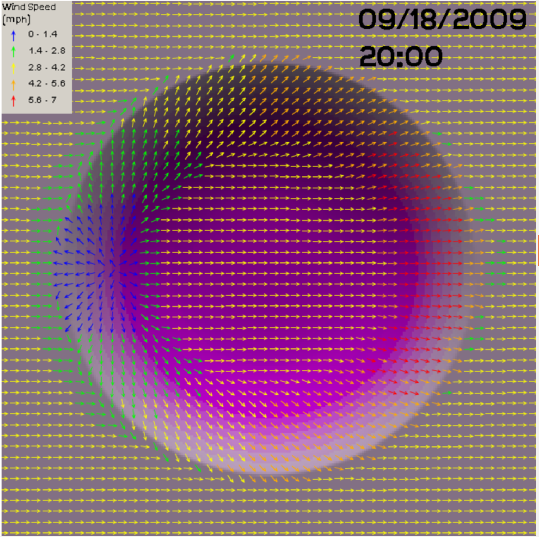

Thermal Paramaterizations
To see a live WindNinja Simulation with Thermal Parameterizations Click Here
Diurnal Winds
Diurnal slope winds are caused by warming of mountain slopes by daytime sunlight or cooling by nocturnal radiation (that is, radiation emitted by the “warm” ground that is lost to the “cold” sky). This heats or cools the air adjacent to the slope, causing buoyant forces that produce flow up or down the slope.
During the daytime,a slope’s orientation to the sun can affect its rate of heating and, therefore, the strength of the diurnal wind. Other factors affecting the diurnal wind strength are how well solar energy is absorbed by the ground surface and transferred to the air, how cloudy it is, and how steep the slope is.
A simple model has been included in WindNinja to simulate the effects of diurnal slope winds. It is designed to compute small scale slope winds, but not larger scale valley winds.The slope winds will have some effect of producing valley winds, but it will be slight. Also, the model will not simulate other buoyancy driven flows such as sea or land breezes.
Diurnal Wind Effects
Mid-Day
Night
Non-neutral Stability
Atmospheric stability is a measure of the resistance of the atmosphere to vertical motion. This is caused by varying air density with height above the ground. Atmospheric stability can have a dramatic impact on surface wind flow. In a very stable atmosphere, flow approaching a mountain would likely tend to flow around the sides rather than over the mountain. In an unstable atmosphere, the flow might tend to go over the mountain.
This is a simplified description of what can be a fairly complex phenomena. Some examples of the complexities of reality are:
- in certain stable flow conditions wave and breaking-wave structures can form near terrain
- the atmospheric stability can change with height in the atmosphere
- some conditions can generate severe downslope wind conditions.
WindNinja has a simple model to include some of the simple aspects of non-neutral stability flows. It can be easily turned on and requires few additional inputs from the user. The current model calculates the surface heat flux to approximate the atmospheric stability.